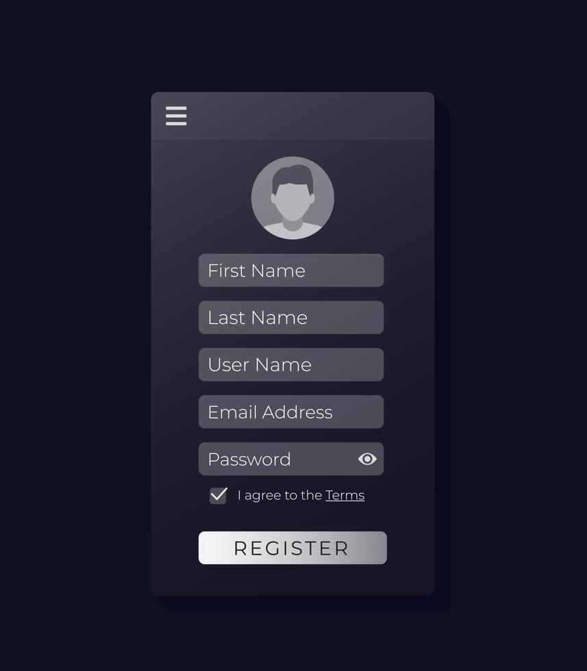

Pasos Relevantes:
• Descargar e instalar la aplicación desde la tienda de aplicaciones.
• Registrar una nueva cuenta o iniciar sesión con una cuenta existente.
• Proporcionar información personal, como nombre, dirección y número de contacto.
• Verificar la dirección de correo electrónico o el número de teléfono (si es necesario) para la seguridad de la cuenta.
Consideraciones de Inclusividad:
Proporcionar una opción de registro sin requerir información sensible, como género, edad, discapacidad motora o mental, para mantener la privacidad o, por el contrario; dar aviso de alguna discapacidad o circunstancia especial que posea el usuario.

Pasos Relevantes:
• Iniciar sesión en la aplicación (si aún no lo han hecho).
• Ingresar su ubicación actual o permitir que la aplicación acceda a la ubicación del dispositivo.
• Ver una lista de restaurantes cercanos.
• Seleccionar un restaurante específico.
• Explorar el menú y los platos disponibles.
Consideraciones de Inclusividad:
Proporcionar opciones de búsqueda tanto por texto como por voz para adaptarse a diferentes preferencias y capacidades.

Pasos Relevantes:
• Seleccionar los platos y bebidas deseados del menú.
• Agregar los elementos al carrito de compras.
• Revisar el pedido y realizar modificaciones si es necesario.
• Proporcionar detalles de entrega, como la dirección y las instrucciones adicionales.
• Elegir el método de pago y proporcionar la información de pago.
• Confirmar el pedido.
Consideraciones de Inclusividad:
Ofrecer opciones de pago variadas, incluyendo tarjetas de crédito, PayPal y posiblemente métodos de pago en efectivo para atender a diferentes usuarios.
Proporcionar un asistente virtual o chat de soporte para ayudar a aquellos que puedan necesitar asistencia adicional durante el proceso de pedido.

Pasos Relevantes:
• Iniciar sesión en la aplicación (si aún no lo han hecho).
• Seleccionar la opción de "Donar una comida".
• Elegir la cantidad de comidas que desean donar.
• Seleccionar una organización o beneficiario para la donación, si es posible.
• Confirmar la donación.
Consideraciones de Inclusividad:
Proporcionar información sobre las organizaciones o programas a los que se destinan las donaciones para que los usuarios se sientan seguros al donar.
Ofrecer opciones de redondeo de factura para que los usuarios puedan donar fácilmente pequeñas cantidades adicionales con cada pedido.


LISTA DE TAREAS
• Tarea 1: Seleccione la aplicación para poder entrar.
• Tarea 2: Inicia sesion o registrese como usuario en "Crear cuenta nueva" (Ingresa nombre, correo y teléfono).
• Tarea 3: Al finalizar el registro seleccione "Aceptar".
• Tarea 4: Ingrese al menú y seleccione la comida que desee ordenar según el catálogo (Comidas, bebidas y postres) o bien podrá visualizar el menú del día.
• Tarea 5: Una vez realizada la selección damos en "Agregar".
• Tarea 6: La aplicación nos dirige a la interfaz de pago donde se mostrará el historial y la comida seleccionada.
• Tarea 7: Se mostrará un cuadro de diálogo donde el usuario podrá escribir alguna queja o sugerencia para su pedido. En caso de que el usuario no desee escribir puede dar en la opción de "Omitir"
• Tarea 8: Se mostrará una interfaz con el nombre de usuario, número de pedido y el carrito de compra, aquí el usuario deberá escribir la ubicación a la que llegará el pedido. Al finalizar deberá dar en la opción de "Aceptar".
• Tarea 9: El usuario podrá seleccionar el método de pago (efectivo o tarjeta)
Tarjeta: El usuario deberá ingresar sus datos y realizar el pedido.
Pago: El usuario deberá esperar a que su pedido llegue a domicilio.
• Tarea 10: Se le preguntará al usuario si desea donar una comida. (Opcional).
• Tarea 11: Seleccionar el botón "Confirmar tu pago".
• Tarea 12: Se mostrará al usuario su ticket de compra con los datos y el pedido realizado.
• Tarea 13: Cuando su pedido haya llegado a su destino se le enviará una notificación "A llegado tu pedido"
• Tarea 14: Se le preguntará al usuario si recibió su pedido (Si, no)
Si: La compra se ha realizado con éxito.
No: Dirigirse a la opción de "Realizar una queja" e ingresar los datos.


.png)
.png)
REFLEXIÓN: Pulido Pérez Pablo Axel
Nosotros como Ingenieros en Comunicación Multimedia tenemos experiencia en creaciones y diseño de páginas web y aplicaciones, durante la enseñanza de nuestros profesores nosotros podemos tener el conocimiento del funcionamiento de muchos aspectos, aunque en algunos casos se cometen errores también aprendemos de ellos. Pero solo tenemos el conocimiento de un programador, más allá de ello no comprendemos lo que el usuario necesitara y que problemas tendría al usar nuestros programas. En general nosotros nos encargábamos de dar un gran diseño a nuestros proyectos sin ver las necesidades del usuario, pero con este proyecto entendimos que no solo eso es importante, sino que también debemos entender todo lo que conlleva crear una aplicación. El comprender al usuario y conocerlo nos ayuda mucho a la creación de algo fácil de usar y atractivo hacia su vista, ya que hoy en día muchos usuarios les gusta las cosas fáciles sin tanto problema de manejo en las interfaces, añadiendo también que les gustan las interfaces amigables y más conocidas, por ejemplo: WhatsApp, Facebook, Instagram, etc. Hoy en día esas son las aplicaciones más usadas por todo tipo de personas sin importar su edad, ya que su interfaz es muy sencilla de comprender y para eso se tuvo que hacer lo que nosotros hicimos en este proyecto. A lo largo del proyecto se tuvo que hacer mucho trabajo de investigación y acercamiento al usuario para entender sus necesidades y sus gustos, ya que nuestra aplicación tenía que ser fácil, amigable y que creara esa necesidad de usarse. Al principio fue complicado entender todos esos datos porque muchos de ellos los dábamos por hechos, pero conforme pasaba el tiempo empezamos a crear esas facilidades en nuestra aplicación y sin necesidad de explicar completamente el funcionamiento, los usuarios que usamos de prueba comprendieron su uso. En conclusión, esas investigaciones son muy importantes para un trabajo real en una aplicación y que no debemos de pasar por alto al usuario, que en cualquier problema que tenga no estresarnos además brindarles toda la ayuda. El diseño iterativo pasa por un proceso evolutivo y fluido mediante una constante retroalimentación y pruebas para realizar mejoras en cada iteración.
REFLEXIÓN: Rodriguez Urbina Grecia de Jesús
Este proyecto me hizo darme cuenta de las diferentes cosas que conlleva la creación de una aplicación, el cómo la importancia no queda solo en el diseño, sino también en las necesidades y las expectativas del usuario. Ya que debemos tener claro y en cuenta que la aplicación no solo será para nosotros sino también para el público ya que la mayoría puede o no entender el funcionamiento. En proyectos anteriores todo era sencillo, sin preocupaciones al crear ya sea una página web o aplicación, ya que no teníamos en cuenta eso que es muy importante, que es para quien va dirigida, si el funcionamiento es fácil de entender o si necesita correcciones. Solo nos preocupábamos por poner el mejor diseño. Entendí que hacer una investigación extensa en la cual conociéramos al usuario y entendiéramos las necesidades que debíamos crear en ellos, nos ayuda bastante a que un proyecto salga a flote. Y es cierto que muchas veces los usuarios prefieren una interfaz fácil de usar, sin tantas explicaciones y que todo sea rápido. En lo personal no creería que sea muy difícil hacer una aplicación que les guste a la gente, pero durante el trabajo que se hizo me di cuenta de que hay muchos errores que se cometen al principio, ya sea con las ideas de la aplicación, los prototipos, las investigaciones y sobre todo satisfacer al usuario. Además, darnos cuenta de que las necesidades se actualizan a cada segundo que pasa, no siempre los usuarios estarán contentos con el producto final, pero con el tiempo nosotros mismos generarles esa necesidad de usar nuestra aplicación e ir mejorando en los aspectos que nos hagan falta. La conclusión que doy a este proyecto es, que hay cosas que no se deben de pasar por alto y que no solo debemos de concentrarnos en dar un buen diseño a las cosas, sino también, darle importancia para quien va dirigido y ponernos a pensar si el usuario tendrá alguna duda o problema al usarlo. También tomando en cuenta que toda ira evolucionando y nosotros tenemos que adaptarnos a esos cambios para dar lo mejor de nuestro proyecto.
REFLEXIÓN: Narvaez Silva Diana Laura
Muchas veces creamos y diseñamos páginas y aplicaciones bajo nuestros propios criterios y experiencia, sabemos cuál sería su usabilidad, las tareas que debería cumplir y por ende como estará diseñado la interfaz, sin embargo no tomamos en cuenta como el usuario manejaría la aplicación y que tan útil sería para que pueda cumplir sus tareas. Solíamos creer que el diseño y sus funciones eran lo más importantes antes que tomar en cuenta la usabilidad que le podría dar el usuario y el cómo podía entender la aplicación. Bien, la aplicación podría estar bien estructurada y ser entendible para quien la esté programando pero si el usuario no logra comprender su uso o interfaz, esta sería totalmente inutil ya que no podría realizar las tareas de la manera correcta. Es importante conocer al usuario para saber cuáles serían sus necesidades o qué dificultades presentan dentro de una determinada situación y a base de esa información generar soluciones efectivas que faciliten el uso de la aplicación además de que sea entendible para realizar las tareas de manera adecuada. Nosotros como diseñadores y programadores nos debemos adaptar a las necesidades del usuario, comprender cómo interactúan con la aplicación y generar interfaces intuitivas que mejoren su usabilidad sin la necesidad de alguna explicación. Obteniendo la información necesaria para comprender al usuario, la empleamos dentro del diseño de la aplicación a modo de que pueda serles útil y entendible además de darle solución a sus necesidades y cumplir con sus expectativas, pasando por un largo proceso de investigación y mejora para llegar a un resultado final que sea efectivo, esto implica identificar los errores que se puedan presentar durante la creación de la aplicación, tanto en la programación como en su interacción, generar soluciones efectivas y que se adapten al usuario además de en enfocarnos plenamente en este, darle una mejora continua a la página. El diseño iterativo pasa por un proceso evolutivo y fluido mediante una constante retroalimentación y pruebas para realizar mejoras en cada iteración.
REFLEXIÓN: Marmolejo Hernández Azul Pamela
Lo que me llevo de aprendizaje de este semestre en esta materia es que uno piensa que al elaborar y diseñar una aplicación es fácil o no se necesita de varios puntos para su evaluación, pero en estos 3 parciales pudimos ver que si se necesitan para hacer diferentes pruebas y poder comprobar su usabilidad en el mercado. Lo primero que tuvimos que hacer es especificar qué tipo de aplicación queríamos elaborar y así las tareas importantes que esta deberá hacer, también otro punto es decidir a qué usuarios va a ir dirigido la aplicación si es para todo el público o un público en específico. Por tanto, para poder seguir avanzado tuvimos que crear diferentes escenarios para observar cuales serían las necesidades de cada usuario y en como la aplicación podría usarse en cada uno de ellos, a partir de este punto se empezó a diseñar la aplicación primero con un prototipo de papel y luego con un prototipo físico para tener la idea de lo que íbamos hacer, después de tener las observaciones del prototipo de papel y el segundo prototipo se empezó a realizar la aplicación y utilizar colores y una tipografía parecida a la de la Casa de Toño donde tomamos en cuenta que debe ser llamativo al usuario. Al tener la aplicación lista, se tuvo que hacer las diferentes pruebas que nos enseñaron en el ultimo parcial para poder ver si la aplicación cumplió con los puntos que se requieren para su usabilidad. En conclusión, al hacer este proyecto aprendí que es lo que se necesita para poder hacer un diseño de algún otro producto y lo que se necesita para ver si va a ser fiable y funcional ya que por las evaluaciones que nos hacían podíamos mejor nuestro trabajo y darles un mejor resultado a nuestros usuarios y también obtener más experiencia con proyectos parecidos a este, porque fue un trabajo un poco difícil y tardado, pero se obtuvo el resultado deseado.
REFLEXIÓN: Herrera Coria Ariadna Michelle
A lo largo de la materia de Diseño de Interfaces, he experimentado un valioso viaje de aprendizaje que ha transformado mi comprensión sobre la creación de interfaces. Desde la concepción inicial hasta la versión final, he adquirido una apreciación más profunda de los principios fundamentales que sustentan un diseño exitoso.
En primer lugar, ahora le hecho la culpa a la interfaz cuando no le entiendo a algún dispositivo o aplicación. Ahora comprendo que aada fase no solo ha representado una oportunidad para pulir la estética visual, sino también para perfeccionar la usabilidad a través de la comprensión constante de las necesidades del usuario. Este se vuelve esencial para evitar posibles obstáculos y garantizar que la interfaz resultante sea intuitiva y eficiente.
Otra cosa es el reconocimiento de que el diseño no es un destino, sino un paso mas de mejora en la comprensión de cómo los usuarios interactúan con la interfaz, lo que ha llevado a ajustes constantes y mejoras. Este enfoque contrasta con la idea de un diseño estático y final, pues no importo mucho que el diseño se viera estético si en las pruebas con usuarios había partes donde no era comprensible lo que se tenía que hacer o hacia donde ir.
En conclusión, el proceso de diseño iterativo me ha formado habilidades, sino que ha moldeado mi mentalidad hacia un enfoque mas técnico y orientado al usuario en el diseño de interfaces, donde no por que yo entienda como se mueve o comporta mi aplicación significa que esta esta correcta y es usable pues hay detalles que paso por alto sin darme cuenta.
❖ Marmolejo Hernández Azul Pamela
❖ Narváez Silva Diana Laura
❖ Pulido Pérez Pablo Axel
❖ Rodríguez Urbina Grecia de Jesús